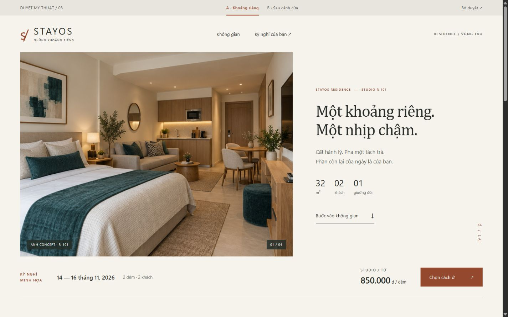
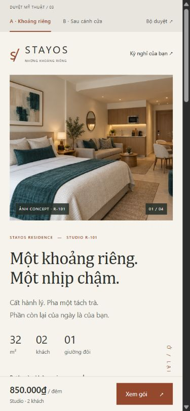
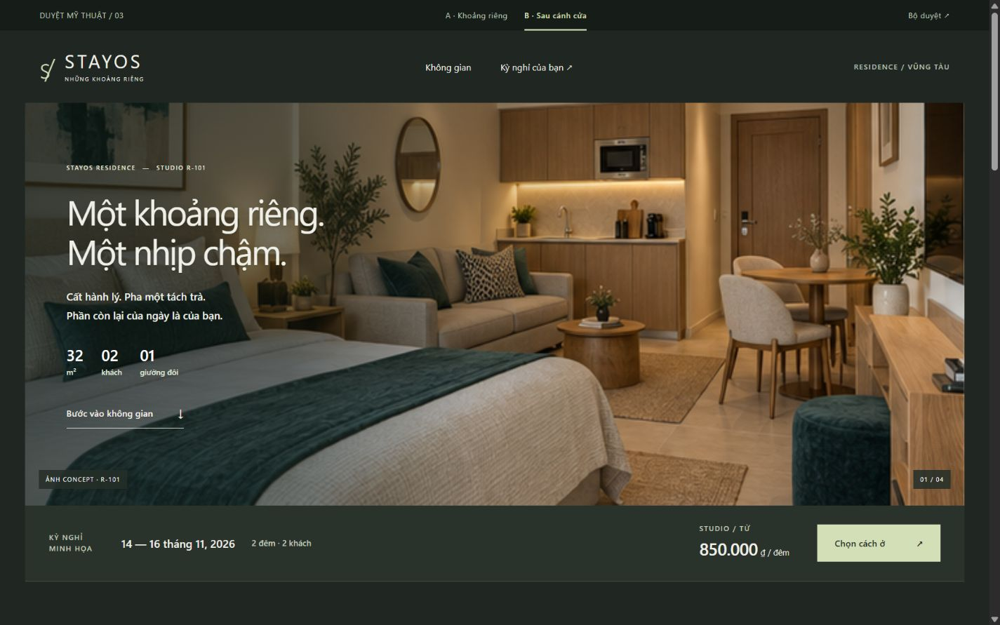
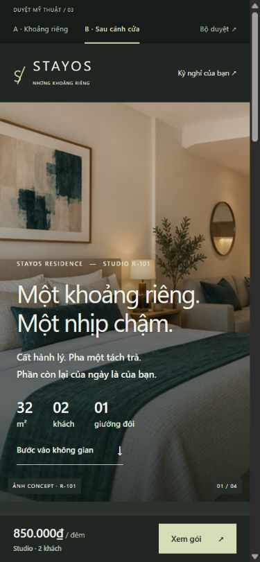

A / Khoảng riêng
Sáng và tĩnh. Bố cục lệch trục như một trang tạp chí, chữ có chân, điểm nhấn đất nung.

MOBILE / 390 × 844

DUYỆT HƯỚNG MỸ THUẬT · 18.10.2026
Cùng Studio R-101, bộ ảnh concept, ngày ở, số khách và hai gói. Chỉ thay bố cục, typography, màu và nhịp hình ảnh. Không thay booking chính.
Sáng và tĩnh. Bố cục lệch trục như một trang tạp chí, chữ có chân, điểm nhấn đất nung.

MOBILE / 390 × 844

Hướng được chọn. Ảnh sáng hơn, chữ rõ hơn, gallery một ảnh lớn và hai ảnh bổ trợ. Xanh nhạt tập trung ở CTA và gói nổi bật.

MOBILE / 390 × 844
